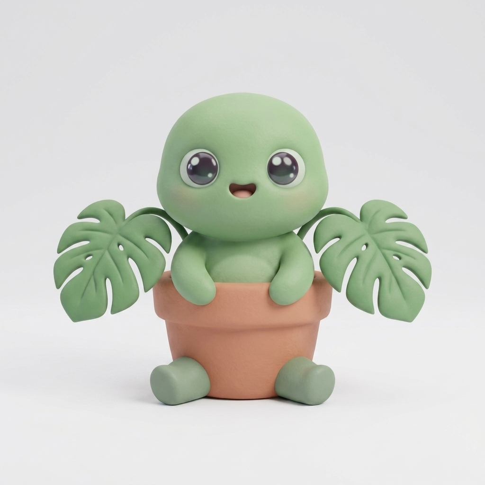
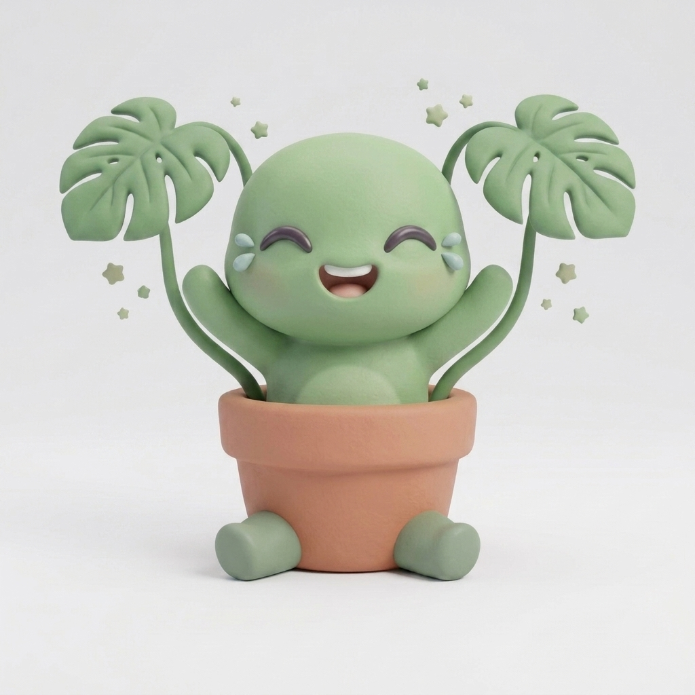
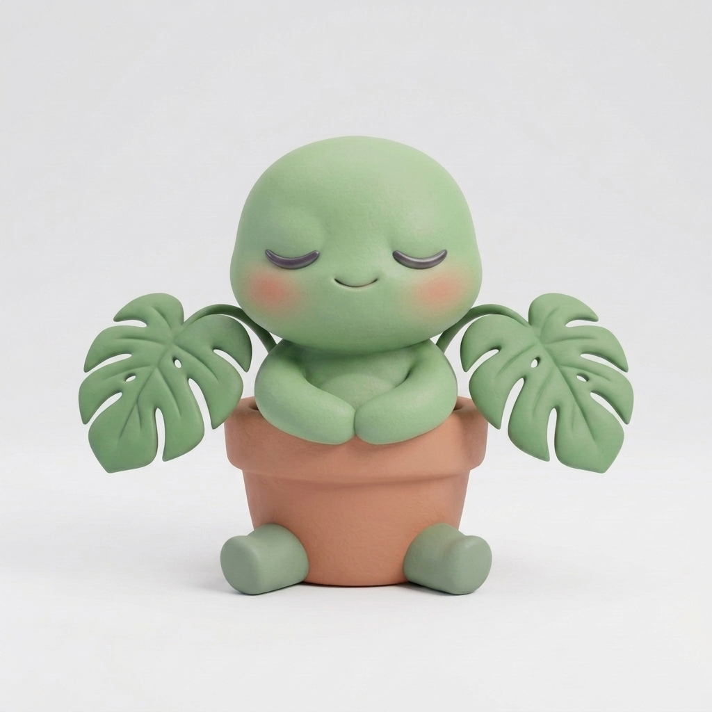
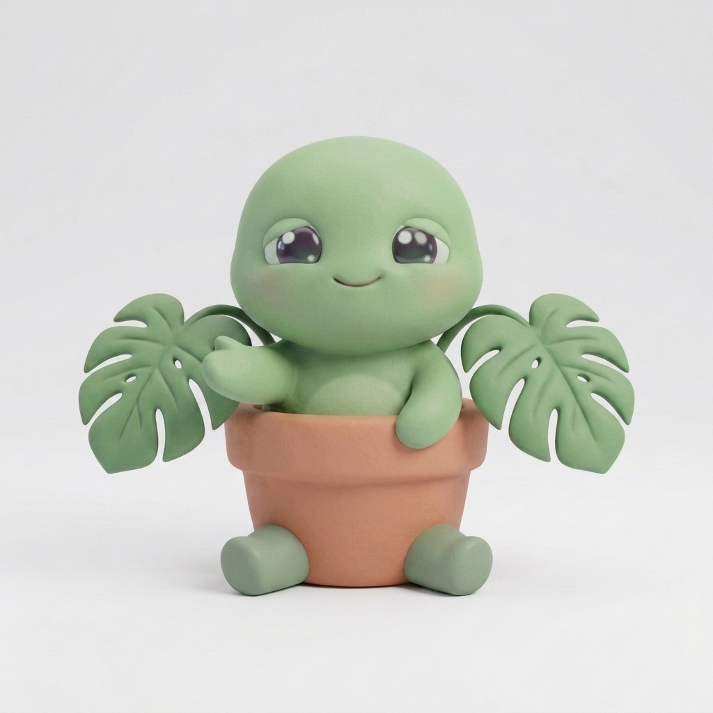
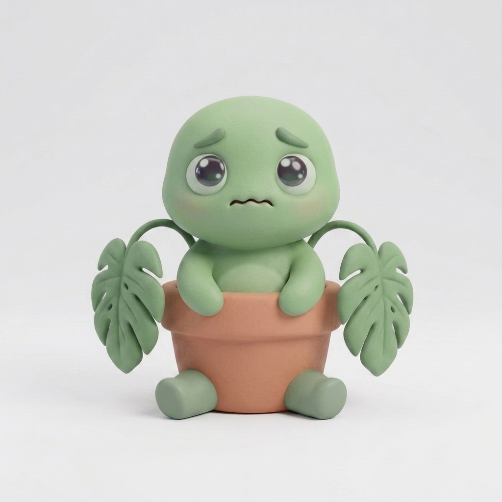
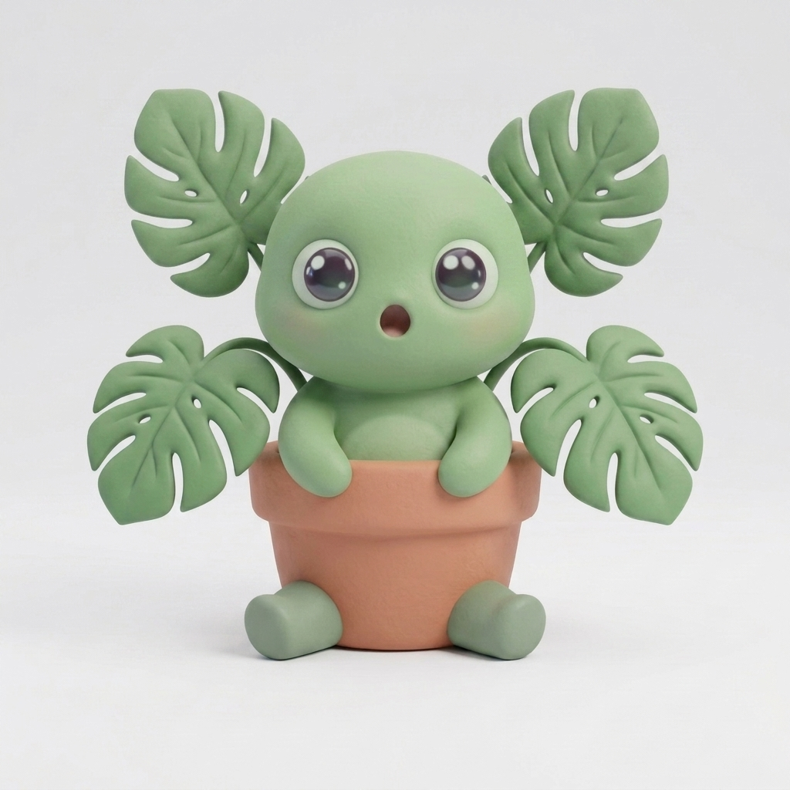
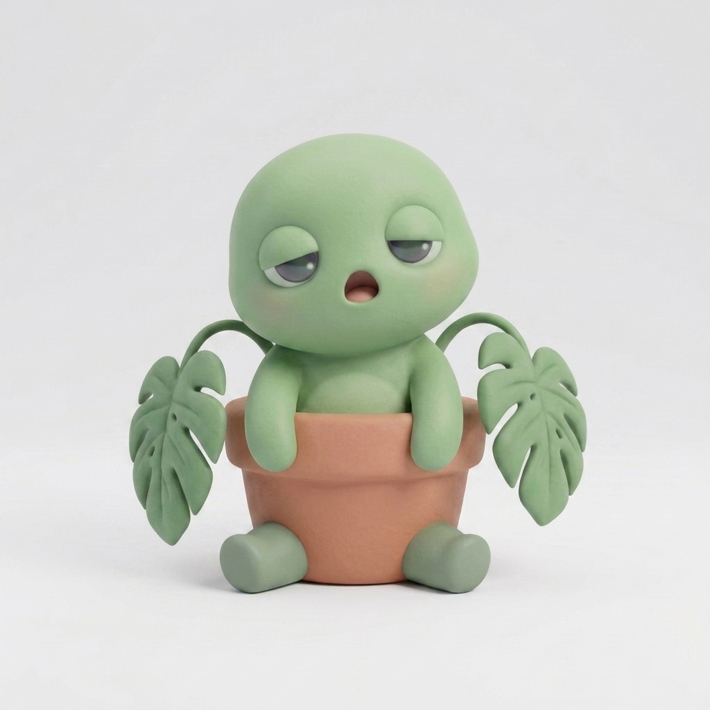

기본 default평상시·UI 상주"오늘도 잘 지냈어?"

환호 happy새 잎·성장 단계 달성"우와, 잎이 났어! 봐봐!"

뿌듯 proud관리 잘한 날·연속 출석"잘 챙겼네. 기특하다."

다독임 cheer실패·시듦 이후 위로"괜찮아. 다시 키우면 되지."

걱정 worry빛 부족·물 부족 경고"얘가 좀 힘들어 보이는데…"

놀람 surprise이벤트·돌발 상황"어? 이거 처음 보는 건데!"

졸음 sleepy밤·장시간 미접속 복귀"으암… 벌써 밤이네."